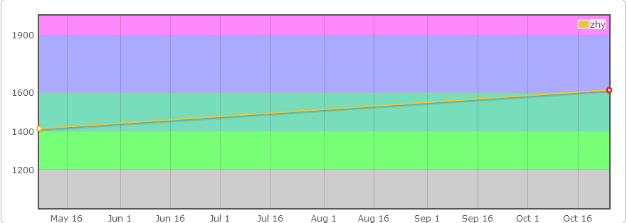

------ 业内知名全球性比赛及训练平台，以其高质量题目，众多用户，科学的Rating系统，趣味性的比赛形式等吸引越来越多的程序猿关注，用户的Rating可以很大程度上反映其参赛水平，可以说是业内衡量程序猿编码水平的重要参考。(link here)
从上大学至今也算参与了若干场CF的比赛，rating一般，不过也是“一分价钱一分货”。正式参赛次数远不如几位积极的学长（eg：Google的康师傅sweetsc，美帝的种神BSBandme），多是因为晚上不想熬夜掉分所致。
现在也算是从ACM比赛中“退役”了，也没什么压力，有种特别想刷一刷CF的冲动，无奈冬令时太晚，只能挑一些时间比较早的比赛水水，今后不管是正式比赛还是练习赛都会发文到这里，随便写写解题报告，心得什么的，也算是对自己一个激励，争取不会的题看看别人的思路也要做出来，不能像以前那样不思进取了。
主要交替刷两个号，Des_Payfor和zhy，正式比赛刷低分的，练习用Des_Payfor。Rating变化会在本篇更新，Code会更新到github，文就一场比赛发一篇了，也许会考虑在这里加上链接。
